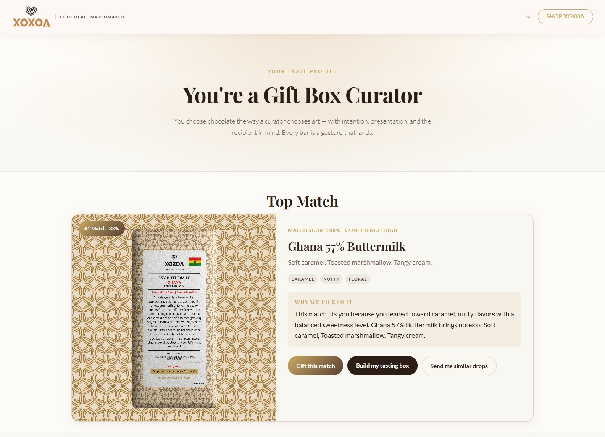

Actual interface · Demonstration inputsXOXOA
A chocolate discovery experience that connects taste preferences, origin stories, and real product data. My contribution spans interaction design, React implementation, and digital strategy.
Behind the build
The question: how do you help a customer discover nuanced flavors without losing a brand’s character?
I worked on the taste quiz, explainable recommendations, and catalog structure as a Product Design Intern and continuing collaborator. The screenshots show the local product build; they do not establish a public launch.
Read the full case study ↗